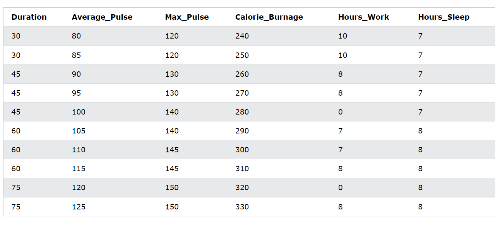
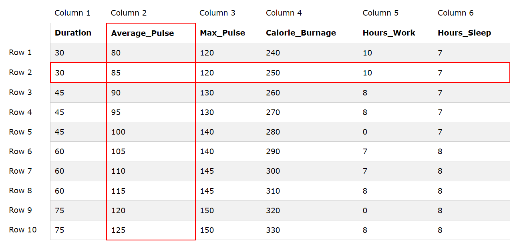
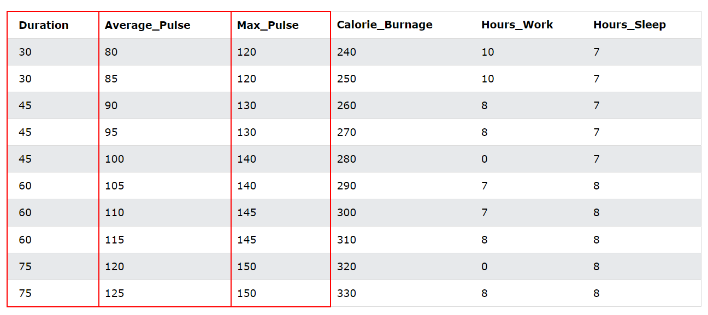

A database table is a table with structured data.
The following table shows a database table with health data extracted from a sports watch:
This dataset contains information of a typical training session such as duration, average pulse, calorie burnage etc.
A database table consists of column(s) and row(s):
A row is a horizontal representation of data.
A column is a vertical representation of data.
A variable is defined as something that can be measured or counted.
Examples can be characters, numbers or time.
In the example under, we can observe that each column represents a variable.
There are 6 columns, meaning that there are 6 variables (Duration, Average_Pulse, Max_Pulse, Calorie_Burnage, Hours_Work, Hours_Sleep).
There are 11 rows, meaning that each variable has 10 observations.
But if there are 11 rows, how come there are only 10 observations?
It is because the first row is the label, meaning that it is the name of the variable.